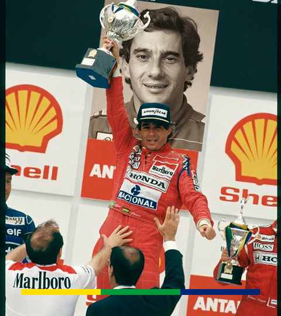

Nasce em São Paulo
Nasce em 21 de março, na capital paulista. Ainda criança, ganha o primeiro kart.
Nascido em São Paulo em 21 de março de 1960, Ayrton Senna da Silva foi tricampeão mundial de Fórmula 1 e se tornou símbolo de talento, coragem e determinação. Morreu em 1º de maio de 1994, em Ímola, mas sua história segue inspirando o Brasil e o mundo.

A HISTÓRIA
Os principais momentos da vida e da carreira de Ayrton Senna
Nasce em 21 de março, na capital paulista. Ainda criança, ganha o primeiro kart.
Muda-se para a Inglaterra e começa a competir nos monopostos, na Fórmula Ford.
Conquista o título da Fórmula 3 britânica e abre caminho para a F1
Chega à categoria pela Toleman e termina em segundo sob chuva em Mônaco.
Vence o GP de Portugal, em Estoril, com a Lotus sob chuva forte.
NPela McLaren, conquista o primeiro campeonato mundial de pilotos.
Leva os títulos de 1990 e de 1991 e chega a três campeonatos mundiais.
Em 1º de maio, morre em acidente no GP de San Marino, aos 34 anos.